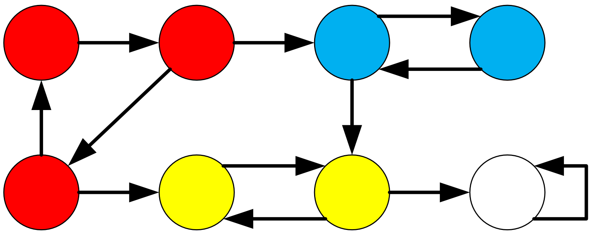
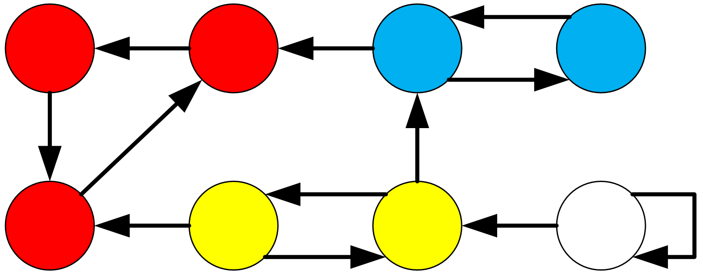
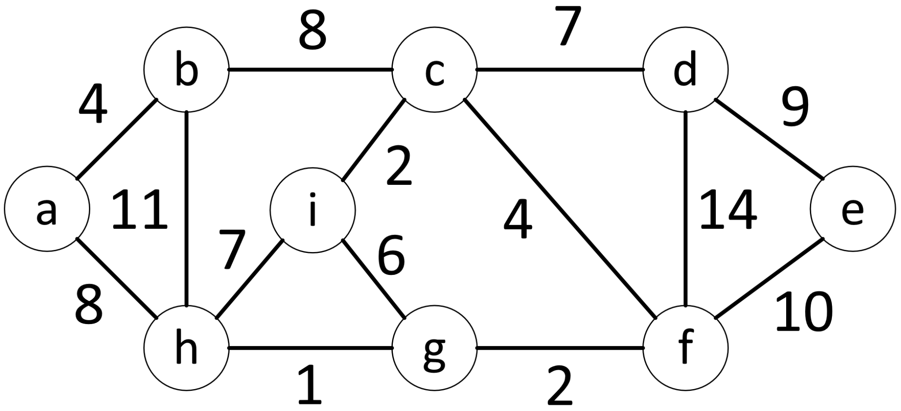
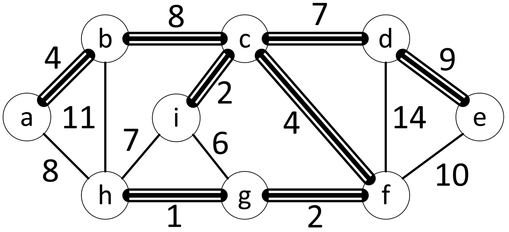
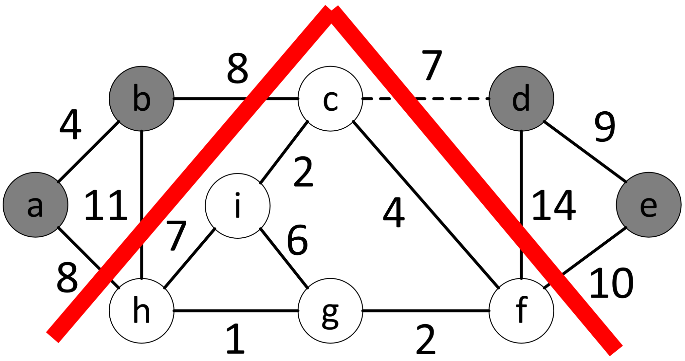

На рисунке цветом выделены сильно связные компоненты

На рисунке представлен транспонированный граф с предыдущего слайда

Сложность алгоритма разложения на сильно связные компоненты:
$$\Theta(|V| + |E|)$$Граф $G = (V, E)$, в котором каждому ребру из множества $E$ поставлено в соответствие некоторое число $w$, называется взвешенным, а число $w$ называется весом ребра

На рисунке тройной линией выделены рёбра, входящие в MST

На рисунке красным выделена линия разреза, пунктиром обозначено лёгкое ребро

Для реализации алгоритма Прима каждой вершине назначаются дополнительные свойства:
Алгоритм принимает на вход, помимо графа $G$, некоторую вершину $r$, которая станет корнем результирующего минимального остовного дерева
Временная сложность работы алгоритма Крускала: $$O(Elog_2V)$$
Временная сложность работы алгоритма Прима: $$O(Elog_2V)$$